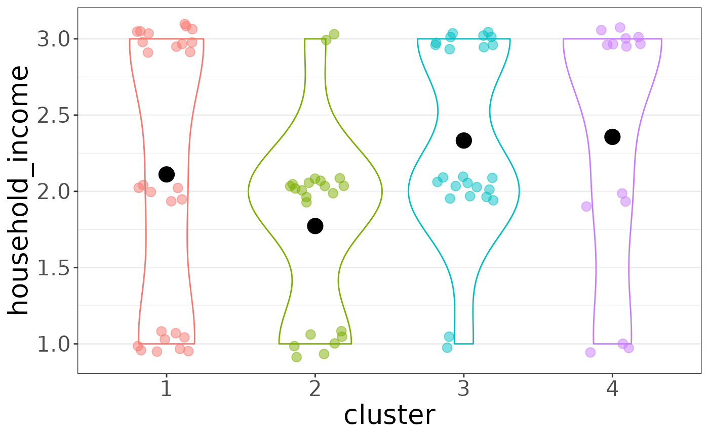
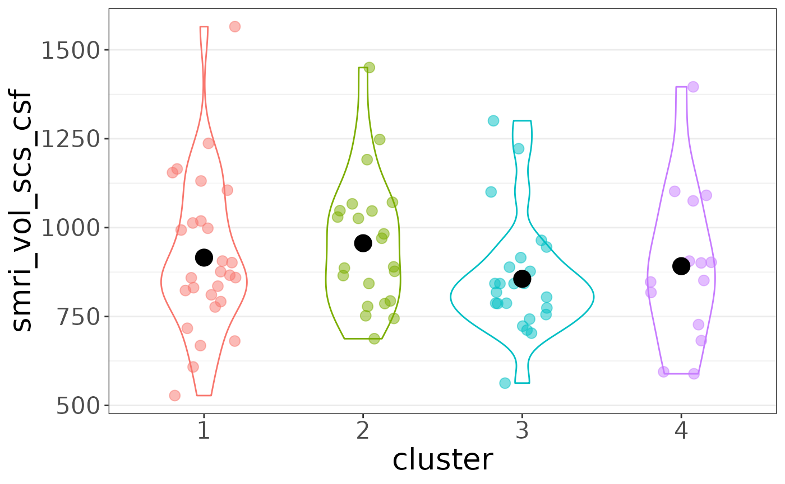
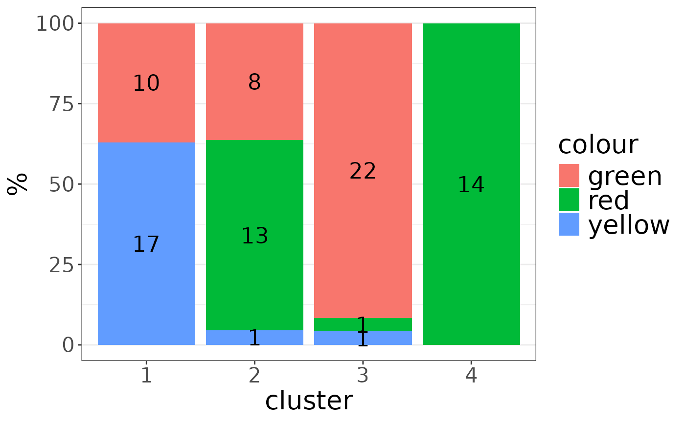

Feature Plots
feature_plots.RmdDownload a copy of the vignette to follow along here: feature_plots.Rmd
Given a cluster solution formatted as a row of a solutions matrix (or
extended solutions matrix) and a data_list and/or
target_list containing features to plot, the
auto_plot() function can automatically generate
ggplot-based bar and jitter plots showing how that
particular feature was divided across clusters.
library(metasnf)
data_list <- generate_data_list(
list(abcd_subc_v, "subcortical_volume", "neuroimaging", "continuous"),
list(abcd_h_income, "household_income", "demographics", "continuous"),
list(abcd_colour, "favourite_colour", "misc", "categorical"),
list(abcd_pubertal, "pubertal_status", "demographics", "continuous"),
list(abcd_anxiety, "anxiety", "behaviour", "ordinal"),
list(abcd_depress, "depressed", "behaviour", "ordinal"),
uid = "patient"
)
# Build space of settings to cluster over
settings_matrix <- generate_settings_matrix(
data_list,
nrow = 2,
min_k = 20,
max_k = 50,
seed = 42
)## [1] "The global seed has been changed!"
# Clustering
solutions_matrix <- batch_snf(data_list, settings_matrix)## [1] "Row: 1/2 | Time remaining: 0 seconds"
## [1] "Row: 2/2 | Time remaining: 0 seconds"
## [1] "Total time taken: 0 seconds."
sm_row <- solutions_matrix[1, ]Note, the row you pick could come directly from a
solutions_matrix, but could also come from an
extended_solutions_matrix or from a representative solution
picked after get_representative_solutions().
plot_list <- auto_plot(sm_row, data_list)## [1] "Generating plot 1/35: smri_vol_scs_cbwmatterlh"
## [1] "Generating plot 2/35: smri_vol_scs_ltventriclelh"
## [1] "Generating plot 3/35: smri_vol_scs_inflatventlh"
## [1] "Generating plot 4/35: smri_vol_scs_crbwmatterlh"
## [1] "Generating plot 5/35: smri_vol_scs_crbcortexlh"
## [1] "Generating plot 6/35: smri_vol_scs_tplh"
## [1] "Generating plot 7/35: smri_vol_scs_caudatelh"
## [1] "Generating plot 8/35: smri_vol_scs_putamenlh"
## [1] "Generating plot 9/35: smri_vol_scs_pallidumlh"
## [1] "Generating plot 10/35: smri_vol_scs_3rdventricle"
## [1] "Generating plot 11/35: smri_vol_scs_4thventricle"
## [1] "Generating plot 12/35: smri_vol_scs_bstem"
## [1] "Generating plot 13/35: smri_vol_scs_hpuslh"
## [1] "Generating plot 14/35: smri_vol_scs_amygdalalh"
## [1] "Generating plot 15/35: smri_vol_scs_csf"
## [1] "Generating plot 16/35: smri_vol_scs_aal"
## [1] "Generating plot 17/35: smri_vol_scs_vedclh"
## [1] "Generating plot 18/35: smri_vol_scs_cbwmatterrh"
## [1] "Generating plot 19/35: smri_vol_scs_ltventriclerh"
## [1] "Generating plot 20/35: smri_vol_scs_inflatventrh"
## [1] "Generating plot 21/35: smri_vol_scs_crbwmatterrh"
## [1] "Generating plot 22/35: smri_vol_scs_crbcortexrh"
## [1] "Generating plot 23/35: smri_vol_scs_tprh"
## [1] "Generating plot 24/35: smri_vol_scs_caudaterh"
## [1] "Generating plot 25/35: smri_vol_scs_putamenrh"
## [1] "Generating plot 26/35: smri_vol_scs_pallidumrh"
## [1] "Generating plot 27/35: smri_vol_scs_hpusrh"
## [1] "Generating plot 28/35: smri_vol_scs_amygdalarh"
## [1] "Generating plot 29/35: smri_vol_scs_aar"
## [1] "Generating plot 30/35: smri_vol_scs_vedcrh"
## [1] "Generating plot 31/35: household_income"
## [1] "Generating plot 32/35: colour"
## [1] "Generating plot 33/35: pubertal_status"
## [1] "Generating plot 34/35: cbcl_anxiety_r"
## [1] "Generating plot 35/35: cbcl_depress_r"
names(plot_list)## [1] "smri_vol_scs_cbwmatterlh" "smri_vol_scs_ltventriclelh"
## [3] "smri_vol_scs_inflatventlh" "smri_vol_scs_crbwmatterlh"
## [5] "smri_vol_scs_crbcortexlh" "smri_vol_scs_tplh"
## [7] "smri_vol_scs_caudatelh" "smri_vol_scs_putamenlh"
## [9] "smri_vol_scs_pallidumlh" "smri_vol_scs_3rdventricle"
## [11] "smri_vol_scs_4thventricle" "smri_vol_scs_bstem"
## [13] "smri_vol_scs_hpuslh" "smri_vol_scs_amygdalalh"
## [15] "smri_vol_scs_csf" "smri_vol_scs_aal"
## [17] "smri_vol_scs_vedclh" "smri_vol_scs_cbwmatterrh"
## [19] "smri_vol_scs_ltventriclerh" "smri_vol_scs_inflatventrh"
## [21] "smri_vol_scs_crbwmatterrh" "smri_vol_scs_crbcortexrh"
## [23] "smri_vol_scs_tprh" "smri_vol_scs_caudaterh"
## [25] "smri_vol_scs_putamenrh" "smri_vol_scs_pallidumrh"
## [27] "smri_vol_scs_hpusrh" "smri_vol_scs_amygdalarh"
## [29] "smri_vol_scs_aar" "smri_vol_scs_vedcrh"
## [31] "household_income" "colour"
## [33] "pubertal_status" "cbcl_anxiety_r"
## [35] "cbcl_depress_r"
plot_list$"household_income"
plot_list$"smri_vol_scs_csf"
plot_list$"colour"
If there’s something you’d like to change about the plot, you can
always tack on ggplot2 elements to build from the skeleton
provided by auto_plot:
plot_list$"colour" +
ggplot2::labs(
fill = "Favourite Colour",
x = "Cluster",
title = "Patient Favourite Colour by Cluster"
) +
ggplot2::scale_fill_manual(
values = c(
"green" = "forestgreen",
"red" = "firebrick3",
"yellow" = "darkgoldenrod1"
)
)